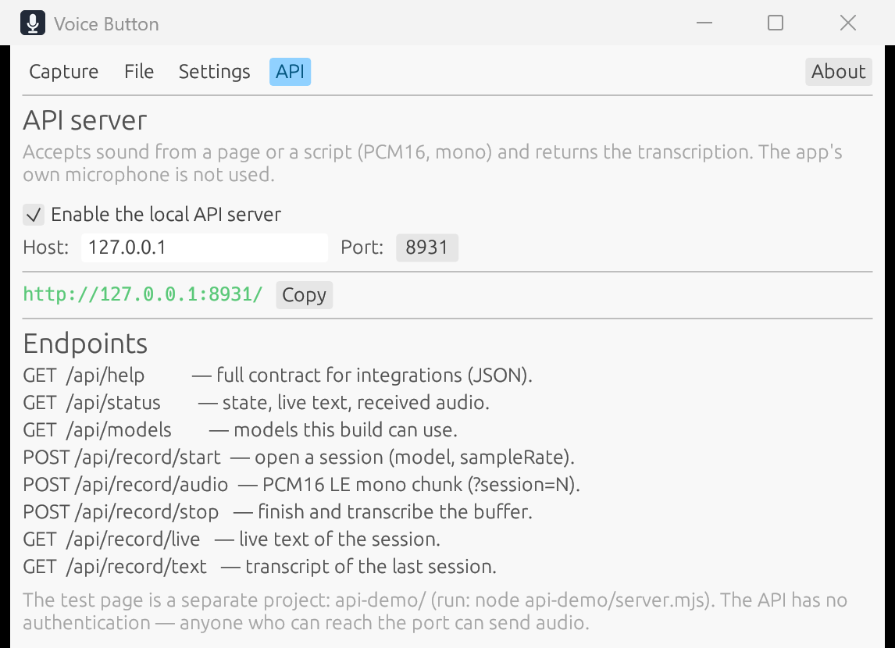
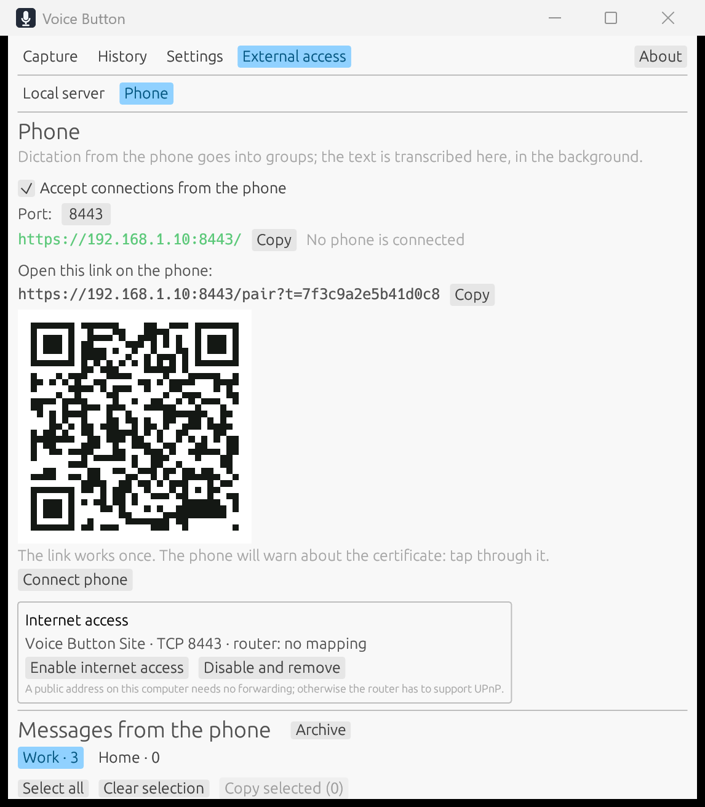

从托盘或窗口
左键录制新消息，中键录制并插入到光标处；两个动作可以互换。图标会用颜色显示录音和处理状态。
语音直接在你的电脑上变成文字。点击托盘里的麦克风，开口说话，再从剪贴板取走完成的文本。
免费 · MIT · 无需账号 · 无云端
“想法刚出现，就已经被记录下来了。不用切换窗口，也不会把声音发到服务器。”
CAPTURE
转写与录音并行进行：长时间录音会在停顿处切分，停止后只处理最后一段。也可以在“文件”标签页转写现成的音频或视频文件——视频会自动提取音轨。

左键录制新消息，中键录制并插入到光标处；两个动作可以互换。图标会用颜色显示录音和处理状态。
可选多语言 Whisper、面向亚洲语言的 SenseVoice，或俄语 GigaAM CTC/RNN-T。只有你点击时才会下载模型。
按“今天”“昨天”和星期分组显示。展开并复制过去的结果；长列表按需渲染，始终保持流畅。
识别过程中音频不会离开本机，转写完成后会被删除。如果文本无法保证，文件会保留并可从历史记录中打开。没有账号、没有订阅、没有云端处理。

CONTROL WITHOUT FRICTION
没有保存按钮。麦克风、鼠标按键、全局快捷键、声音、音量、语言和开机启动都即时生效。如果模型还在下载，选择会在就绪后应用。

LOCAL API
打开本地 HTTP 服务器，把编辑器、脚本或网页里的声音发过来，应用会返回实时与最终文本——不需要电脑上的麦克风，声音由客户端提供。

手机
在「外部访问 → 手机」中开启接收，用手机相机扫描二维码。手机上会打开一个页面，可以创建独白并在其中口述；转写在电脑上后台进行，随时让位给你自己的口述。
GET VOICE BUTTON @@VERSION@@
推荐
为所有用户安装，添加开始菜单快捷方式，可通过 Windows 正常卸载。
下载安装包免安装
解压后运行 voice-button.exe。请把 voice-button-ui.exe 放在旁边——两个文件都在压缩包里。
下载 ZIP源代码采用 MIT 许可证。安装包内含 ONNX Runtime（MIT）、sherpa-onnx（Apache-2.0）和 whisper.cpp（MIT）；完整许可证文本位于可执行文件旁的 THIRD-PARTY.txt。模型不随包提供：应用只给出下载链接。